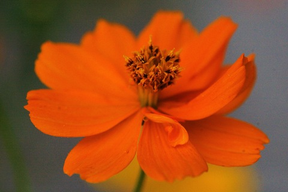

Aug 30, 2024
Daily Lexicon
USCCB Verse
Friday, 21st week in Ordinary Time
Psalms 33 4,5
For upright is the word of the LORD,
and all his works are trustworthy.
He loves justice and right;
of the kindness of the Lord the earth is full.
Monarch Butterfly
Photo # 1629
Aug 29, 2024
Daily Lexicon
USCCB Verse
Thursday, 21st week in Ordinary Time
The Beheading of Saint John the Baptist, martyr
Psalms 145 4,5
Generation after generation praises your works
and proclaims your might.
They speak of the splendor of your glorious majesty
and tell of your wondrous works.
Nags Head, OBX
Photograph of me photographing the sunrise
By Cathy Grillo
Photo # 1628

Aug 28, 2024
Daily Lexicon
USCCB Verse
Wednesday, 21st week in Ordinary Time
Saint Augustine of Hippo, bishop and doctor of the Church
Psalms 145 10,11
Let all your works give you thanks, O LORD, and let your faithful ones bless you.
Let them discourse of the glory of your Kingdom and speak of your might.
Cosmos
Photo # 1627

Aug 27, 2024
Daily Lexicon
USCCB Verse
Tuesday, 21st week in Ordinary Time
Saint Monica
Psalms 96 11,12
Let the heavens be glad and the earth rejoice; let the sea and what fills it resound;
let the plains be joyful and all that is in them! Then shall all the trees of the forest exult.
Rails to Trails
Mt Airy MD
Photo # 1626

Aug 26, 2024
Daily Lexicon
USCCB Verse
Monday, 21st week in Ordinary Time
Psalms 96 2b,3
Announce his salvation, day after day.
Tell his glory among the nations; among all peoples, his wondrous deeds.
Sunrise
Rehobeth, DE
Photo # 1625

Aug 25, 2024
Daily Lexicon
USCCB Verse
21st Sunday in Ordinary Time
John 6 63,68
Your words, Lord, are Spirit and life;
you have the words of everlasting life.
Wetlands
Rehobeth, DE
Photo # 1624

Aug 24, 2024
Daily Lexicon
USCCB Verse
Saturday, 20th week in Ordinary Time
The Memorial of the Blessed Virgin Mary on Saturday
Saint Bartholomew the Apostle
Psalms 85 11,12
Kindness and truth shall meet;
justice and peace shall kiss.
Truth shall spring out of the earth,
and justice shall look down from heaven.
Backlit clouds
at Sunset
Photo # 1623

Aug 23, 2024
Daily Lexicon
USCCB Verse
Friday, 20th week in Ordinary Time
Saint Rose of Lima, virgin
Psalms 25 4b,5a
Teach me your paths, my God,
guide me in your truth.
Elevated boardwalk trail
Gordons Pond
Rehobeth, DE
Photo # 1622

Aug 22, 2024
Daily Lexicon
USCCB Verse
Thursday, 20th week in Ordinary Time
Queenship of Blessed Virgin Mary
Ezekiel 36 26
I will give you a new heart,
and a new spirit I will put within you.
I will remove the heart of stone from your flesh
and give you a heart of flesh.
Storm Scarp at Sunrise
Rehobeth, DE
Photo # 1621

Aug 21, 2024
Daily Lexicon
USCCB Verse
Wednesday, 20th week in Ordinary Time
Saint Pius X, pope
Hebrews 4 12
The word of God is living and effective,
able to discern the reflections and thoughts of the heart
Sunrise
Rehobeth, DE
Photo # 1620

Aug 20, 2024
Daily Lexicon
USCCB Verse
Tuesday, 20th week in Ordinary Time
Saint Bernard of Clairvaux, abbot and doctor of the Church
Matthew 19 24
Again I say to you,
it is easier for a camel to pass through the eye of a needle
than for one who is rich to enter the Kingdom of God.
Circular Stair Case
Restored Watch Tower
Lewes, DE
Photo # 1619
Aug 19, 2024
Daily Lexicon
USCCB Verse
Monday, 20th week in Ordinary Time
Saint John Eudes, priest
Ezekiel 24 24
When it happens, you shall know that I am the Lord GOD.
Sunrise
North Main Street
Mt Airy MD
Photo # 1618
Aug 18, 2024
Daily Lexicon
USCCB Verse
20th Sunday in Ordinary Time
John 1 58
This is the bread that came down from heaven.
Unlike your ancestors who ate and still died,
whoever eats this bread will live forever.
Knills Farm Crosses
Photo # 1617
Aug 17, 2024
Daily Lexicon
USCCB Verse
Saturday, 19th week in Ordinary Time
The Memorial of the Blessed Virgin Mary on Saturday
Matthew 11 25
Blessed are you, Father, Lord of heaven and earth;
you have revealed to little ones the mysteries of the Kingdom.
Egret
Delaware National Seashore
Gordan's Pond
Photo # 1616
Aug 16, 2024
Daily Lexicon
USCCB Verse
Friday, 19th week in Ordinary Time
Saint Stephen of Hungary
Isaiah 12 2,3
God indeed is my salvation;
I am confident and unafraid.
For the LORD is my strength and my might,
and he has been my salvation.
With joy you will draw water
from the fountains of salvation,
Pond Fountain
Photo # 1615
Aug 15, 2024
Daily Lexicon
USCCB Verse
Thursday, 19th week in Ordinary Time
Assumption of the Blessed Virgin Mary
Revelation 12 10
Then I heard a loud voice in heaven say -
"Now have salvation and power come, - and the kingdom of our God and the authority of his Anointed."
Sunset, Anti Horizon
Mt Airy, MD
Photo # 1614
Aug 14, 2024
Daily Lexicon
USCCB Verse
Wednesday, 19th week in Ordinary Time
Saint Maximilian Mary Kolbe, priest and martyr
John 8 12
Whoever follows me will not walk in darkness but will have the light of life, says the Lord.
Bandstand Overhead lighting
Rehoboth, DE
Photo # 1613
Aug 13, 2024
Daily Lexicon
USCCB Verse
Tuesday, 19th week in Ordinary Time
Saints Pontian, pope, and Hippolytus, priest, martyrs
Matthew 18 13,14
And if he finds it, amen, I say to you, he rejoices more over it
than over the ninety-nine that did not stray.
In just the same way, it is not the will of your heavenly Father
that one of these little ones be lost.
Sunrise
Rehoboth Beach
Photo # 1612
Aug 12, 2024
Daily Lexicon
USCCB Verse
Monday, 19th week in Ordinary Time
Saint Jane Frances de Chantal, religious
Ezekiel 1 5
Then I heard the sound of their wings,
like the roaring of mighty waters,
like the voice of the Almighty.
Sunrise
Rehoboth Beach
Photo # 1611
Aug 11, 2024
Daily Lexicon
USCCB Verse
19th Sunday in Ordinary Time
Psalms 34 6
Look to him that you may be radiant with joy.
And your faces may not blush with shame.
Sunrise
Rehoboth Beach
Photo # 1610
Aug 10, 2024
Daily Lexicon
USCCB Verse
Saturday, 18th week in Ordinary Time
The Memorial of the Blessed Virgin Mary on Saturday
Saint Lawrence, deacon and martyr
2 Peter 1 19
You will do well to be attentive to it,
as to a lamp shining in a dark place,
until day dawns and the morning star rises in your hearts.
Sunrise
Nags Head, OBX
Photo # 1609
Aug 09, 2024
Daily Lexicon
USCCB Verse
Friday, 18th week in Ordinary Time
Saint Teresa Benedicta of the Cross (Edith Stein), virgin and martyr
Deuteronomy 32 39
See now that I, I alone, am he,
and there is no god besides me.
Fibonacci spirals in a sunflower
Photo # 1608